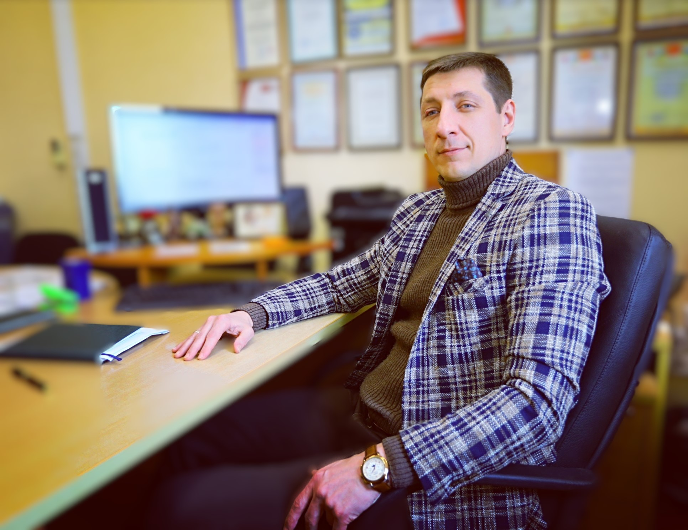

Делай, что тебе нравится,
и делись с теми, кто тебе нравиться.
Этот простой баланс имеет
и распределение, и мотивацию.
и делись с теми, кто тебе нравиться.
Этот простой баланс имеет
и распределение, и мотивацию.
(© «Практикулярий». И.С. Зайцев)
В жизни нет инструкций.
Есть принятые решения.
И есть их последствия.
Всё остальное — проверяется только практикой.
Есть принятые решения.
И есть их последствия.
Всё остальное — проверяется только практикой.
Приветствую тебя. Я — Иван Зайцев.
Сегодня я магистр делового администрирования (MBA General),
сертифицированный проектный менеджер,
магистр металлургии и
PRO level AI Content Maker (AI Creator).
В прошлом я также:
- поэт и автор книги «История чувств одного человека»
- помощник депутата городского совета
- руководитель рабочей группы при облгосадминистрации
- соучредитель и технический директор производственно-торговой компании
- учредитель консалтингового офиса
- фрилансер с частными практиками
Я имею более 20 лет практического опыта работы
с реальными людьми — командами, большими рабочими группами,
управлением, решениями, ответственностью и последствиями.
Более 15 лет — на управленческих позициях
в менеджменте, государственном секторе и консалтинге.
Мой путь начался рано — в 17 лет,
с поступления в ВУЗ и переезда в незнакомый город.
Тогда я впервые почувствовал свободу выбора —
опасную, рискованную, иногда разрушительную,
но формирующую.
Именно этот путь дал мне колоссальный практический опыт
и пробудил интерес к знаниям —
не академический, а живой и осознанный.
Мне всегда было важно понять лично:
почему это работает,
как это устроено
и что произойдёт, если применить это на практике.
Этот азарт со временем превратил обучение почти в зависимость.
Но главное — я всегда фиксировал результат:
свой, коллег и идей,
описанных в книгах —
как успешных, так и ошибочных.